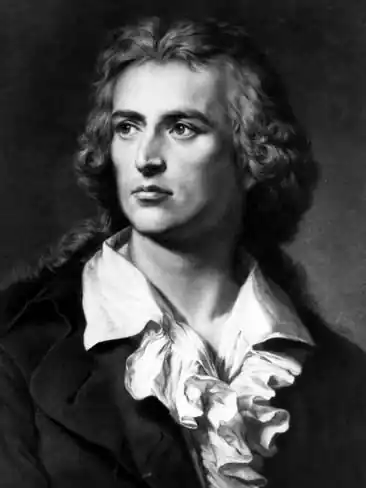
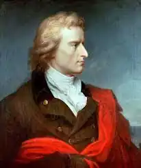
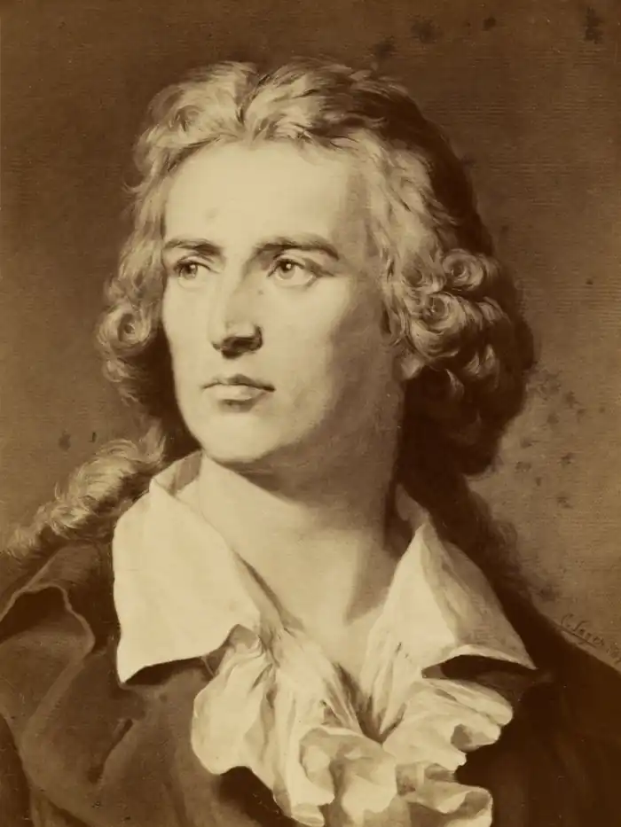

ФРІДРІХ ШІЛЛЕР
(1759-1805)
Життя Шіллера припадає на час, коли роздрібнена внаслідок тридцятирічної війни на 365 князівств Німеччина стогнала під тягарем деспотизму, а знесилений народ ще не був здатним ні на яку політичну активність. Проте саме в цей період в Німеччині виникає широкий літературний рух, відомий під назвою "Буря і натиск",— рух, сутністю якого був пристрасний протест передової німецької молоді проти мерзенності та застою в політичному житті країни, проти князівської тиранії, феодальної моралі й приниження людської особистості. Це справедливе обурення, цей гнів знайшли найкращий вияв саме у творах молодого Шіллера, поета, чий життєвий шлях був дуже тяжкий і передчасно звів його в могилу. Фрідріх Шіллер — німецький поет, драматург, філософ і історик. Його батько — Іоганн Каспар Шіллер — військовий фельдшер, мати — Доротея, уроджена Кодвейс, дочка трактирника. З 1768 року майбутній поет почав відвідувати латинську школу. Як підданий герцога Вюртемберзького, батько змушений був віддати сина до так званої Карлової академії, де він без особливої зацікавленості спочатку вивчав юриспруденцію, а потім — медицину. Вісім років (1773-1780) провів Шіллер у цьому розсаднику' рабів, де панували шпигунство й стеження за учнями, категорично заборонялося спілкування із зовнішнім світом, а всі вихованці підкорялися найсуворішій кийовій дисципліні. Лише ночами Шіллер міг крадькома читати. Він багато разів перечитував твори Плутарха, оди й поеми Клопштока, ліричні вірші та роман "Страждання юного Вертера" свого старшого сучасника Ґете. Пізніше він захопився Шекспіром. Вийшовши з академії після її закінчення, Шіллер був призначений полковим лікарем, одержував за службу жалюгідні гроші. Над першою драмою "Розбійники" Шіллер почав працювати, ще перебуваючи в академії. У 1781 році драма завершена, а 13 січня 1782 року "Розбійники" були вперше показані на сцені Мангеймського театру. Вистава мала колосальний успіх. Потім пішли тріумфальні вистави в багатьох інших містах Німеччини. Незважаючи на те, що постановники часто на свій смак чи за цензурою свавільно калічили текст п'єси, а дія була перенесена із сучасності в XVI століття, неможливо було знищити головного — пафосу драми, шляхетність помислів розбійника Карла Моора, який вирішив у своїй батьківщині викорінити поодинці зло та беззаконня. Шіллер дав своїй драмі два епіграфи, що визначають основну думку п'єси. Перший епіграф: "На тиранів!" свідчив про те, що зміст її спрямований проти тиранства. Другий епіграф з Гіппократа: "Що не зціляють ліки, зціляє залізо, чого не зціляє залізо, зціляє вогонь" — указував на засоби боротьби з тиранією. Головний герой драми Карл Моор — студент, якого, як і автора, захоплюють життєписи великих мужів Греції, що їх склав історик Плутарх. Він мріє перетворити Німеччину на республіку. Карл Моор — перший Шіллерівський герой-ідеаліст і ентузіаст, який мріє про звільнення всього людства. Його рідний брат Франц — повна йому протилежність. Цинік, який нехтує людьми, він оббрехав Карла. Франц саджає батька за грати, зазіхає на честь нареченої брата Амалії. Зраджений братом і проклятий батьком, Карл Моор стає проводирем загону розбійників, щоб здійснювати силою зброї справедливість. Шляхетні розбійники на чолі з Карлом карають злочинних багатіїв і захищають бідняків. Однак незабаром насильство п'янить розбійників, жорстокість стає звичкою. Карл Моор осягає, що злодіяннями мир виправити неможливо, тому вирішує віддатися в руки правосуддя. Але, оскільки за його голову обіцяна щедра нагорода, Карл хоче, щоб його видав який-небудь бідолаха, який має потребу в грошах. У фіналі виявляється характерна еволюція шіллерівського героя: коли не можна врятувати все людство, слід спробувати допомогти хоча б одній нещасливій людині. Уже в першій драмі Шіллер сподівається не на силу, а на моральне виправлення суспільства. Шалена пристрасність персонажів, патетичність їхньої мови, що місцями переходить у брутальність, напруженість сюжету зробили "Розбійників" зразковим надбанням "бурі й натиску" — провідного літературного напрямку Німеччини 70-80-х років XVIII століття. Герцог Вютемберзький, довідавшись про виставу, наказав посадити автора "Розбійників" на гауптвахту й заборонив йому писати що-небудь, окрім творів з медицини. Шіллер вирішив покинути володіння карликового деспота. У ніч на 23 вересня 1782 року, скориставшись сум'яттям пишних придворних торжеств на честь російського цесаревича Павла Петровича, який був одружений з племінницею герцога Карла Євгенія, автор "Розбійників" таємно втік з Вюртемберга. П'ять років тривали бездомні блукання, болюча убогість і завзята боротьба за визнання серед німецьких читачів і театральної публіки. Слідом за "Розбійниками" Шіллер створює другу драму, але вже на історичному матеріалі: "Змова Фієско в Генуї" (1782), жанр якої він визначив як "республіканська трагедія". Дія драми відбувається в Італії в 1547 році. В історію світової драматургії п'єса "Підступність і любов" (1783) увійшла як перша "міщанська трагедія". До Шіллера в трагедіях діяли винятково монархи й аристократи, третій стан дозволялося зображувати тільки в комедіях. У драмі "Підступність і любов" Шіллер довів, що трагічні колізії можливі, а часом неминучі в житті простої скромної людини — "міщанина", за поняттями того часу. Одночасно з драматургією Шіллер присвячує себе поезії. У його віршах думка завжди переважає над почуттям, міркуючи над різними явищами життя, він черпає аргументи в античній міфології чи ренесансному мистецтві. Оспівуючи прекрасну даму, він величає її Лаурою, не тільки виражаючи тим самим піднесений платонічний лад почуттів, але й заявляючи себе прихильником італійського гуманіста Франческо Петрарки. Обидва поети віддаються роздумам над тим, чому так необхідна любов людині та людству. На думку Шіллера, що він її успадкував від античних мудреців, усі частки величезного розрізненого світу возз'єднує сила любові. Любов дає життя, без неї світ і природа мертві. Пристрасть, що оспівується поетом, до Лаури — велике благе почуття, тому що воно — необхідна сполучна частка світобудови. У Карловій академії викладав філософію талановитий педагог і вчений Абель, який став згодом другом Шіллера. На майбутнього поета лекції Абеля справили сильне враження. Професор доводив визначність наперед світової гармонії. Спираючись на вчення німецького філософа і вченого Лейбниця, він прагнув прищепити своїм вихованцям оптимістичне світосприймання, вселити любов до ближнього, наставляв їх на шлях пізнання навколишнього життя. Лекції Абеля не минули для Шіллера марно. Найбільш відчутним є вплив його філософської концепції в одному з найвідоміших творів Шіллера "Ода радості", в основу якого покладено властивий Шіллеру принциповий оптимізм, віру в людину, переконаність у тому, що люди можуть і повинні зріднитися один із одним. Цей вірш зажив світової слави завдяки тому, що Бетховен завершив 9-у симфонію грандіозним хором на його текст. Після кількох невдач у Мангеймському театрі, директор якого Дальберг під різними приводами відмовлявся ставити нові п'єси Шіллера, після тривалої відсутності грошей поет знайшов у Лейпцигу друзів і заступників, які допомогли йому перебороти всі життєві труднощі. Твори Шіллера були видані, він жив під дружнім дахом свого полум'яного шанувальника Готфріда Кернера, який тактовно опікував Шіллера. Падіння Бастилії потрясло підвалини феодального світу. Історичний прогрес з філософської абстракції перетворився на відчутну реальність, рух історії прискорився. Філософське мислення Шіллера вловлювало закономірність часу. Невдоволений сучасністю, він пише вірш "Боги Греції" (1788), в якому бринить ностальгія за античним епосом. Поет уславлює язичницькі божества давніх греків. Античний світ Шіллер уявляє як осередок радості, любові й краси. Природа людською уявою була одухотворена й щедра до людини. Античні божества допомагають Шіллеру в побудові певної філософської концепції. Серед богів — благодійників людства — раз по раз виникають тіні міфічних істот, які втілюють лихі сили. Античний світ для нього тільки казка колишніх часів, минуле руйнується, щоб дати дорогу майбутньому. Нитка історії не переривається, людський прогрес неминучий, хоч би яку дорогу ціну слід було б за нього заплатити,— така основна думка вірша. Шіллер усвідомив, що на межі XVIII-XIX століть прогрес людства не вдовольнить кожну людину в спробі досягти нею свого щастя. Ця ж думка розвивається в баладах Шіллера. Жанр балади відродили Ґете і Шіллер, які вступили в дружнє . змагання у створенні балад. Відбулося це в 1797 році, який вони назвали потім роком балад. Це був дуже важливий момент у житті Шіллера. Він жив у Веймарі з 1795 року, заступництво Саксен-Веймарського герцога Карла Августа давало можливість без думки про заробіток писати вірші, п'єси, займатися філософією й історією. У цей період відбулося зближення з Ґете, про що Шіллер мріяв давно. Балади Шіллера сприймаються як відгомін тих давніх часів, коли різного роду повір'я і перекази, живучи поряд з реальним життям, зливалися в примхливі фольклорні образи. У баладах найчастіше говориться не про якийсь конкретний історичний час, а про старовину як таку. Балади приваблюють і водночас лякають своїми дивовижними жорстокими сюжетами, вражають нез'ясованими таємницями природи. Так, у баладі "Івикові журавлі" поет наводить думку про невідворотність відплати за вчинене лихо. Якщо немає серед людей свідків учиненого, то сама природа карає, а злочинець неодмінно видає себе. Ніхто не має права піддавати життя героя тяжкому випробуванню, не можна двічі спокушати долю — такий очевидний підсумок балади "Водолаз", що стала відомою в нас з перекладу Жуковського за назвою "Кубок". Правителя автор звинувачує в жорстокості, а безодня вод зображена в розповіді водолаза дивною і разом з тим загадковою, як бурхлива стихія, що клекоче. У ряді балад сюжетним стрижнем стає іспит героя — перевірка його мужності, рішучості, відваги. Та коли, як це відбувається в "Рукавичці", життя людини піддають небезпеці, жартуючи, грають, ладні вірного лицаря зробити здобиччю хижих звірів, то герой має право повестися нечемно з дамою. У баладі "Полікратів перстень" тривожить уяву ідея невідворотності долі.